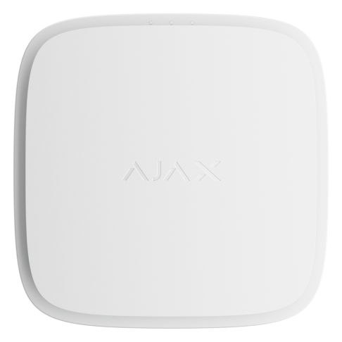
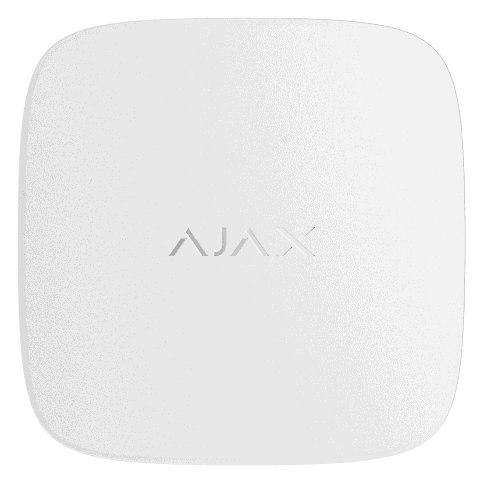

Gamme
Alarme intrusion
Détection d’intrusion, commandes et sirènes Ajax Systems. Baseline pour l’essentiel sans fil ; Superior pour les architectures plus exigeantes.

Complément Baseline
Détecteurs incendie pour le logement.
Fumée, chaleur et monoxyde de carbone dans la même application que l’alarme. Pour un bâtiment, la ligne EN54 est à part.
Residence Line
À ajouter à une alarme Baseline.


Baseline vs Superior
Choisir le bon niveau.
La disponibilité Superior dépend des références et du projet. Orientation lors de l’étude gratuite.
Baseline · 28 références
L’essentiel, sans fil.
Large choix sans fil pour les besoins standards. Déploiement rapide, interface unique, évolutif : idéal pour démarrer et faire grandir votre système.
- Détecteurs de mouvements14 réf.
- Sirènes4 réf.
- Claviers4 réf.
- Boutons & télécommandes3 réf.
Superior · 43 références
Pour les projets exigeants.
Sans fil et/ou filaire, multi-zones, sites sensibles : options avancées selon les références. Sur étude Active Sécurité 974, partenaire agréé Ajax Systems.
- Détecteurs de mouvements16 réf.
- Sirènes9 réf.
- Détecteurs d'ouverture6 réf.
- Claviers6 réf.
Également au catalogue : Residence Line (26).
Baseline
Sélection du catalogue AS974.


Superior
Pour aller plus loin.


Dans cette gamme
Tous les types de produits.
Prêt à sécuriser votre espace ?
Étude et devis gratuits, sans engagement. Intervention chez vous, partout à La Réunion.